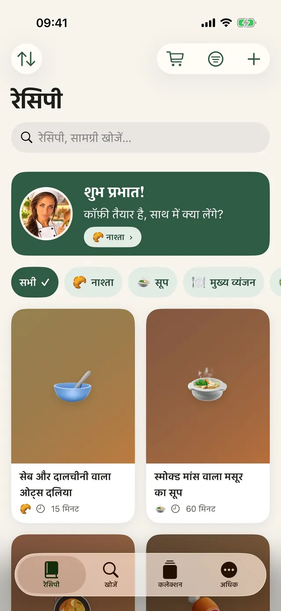
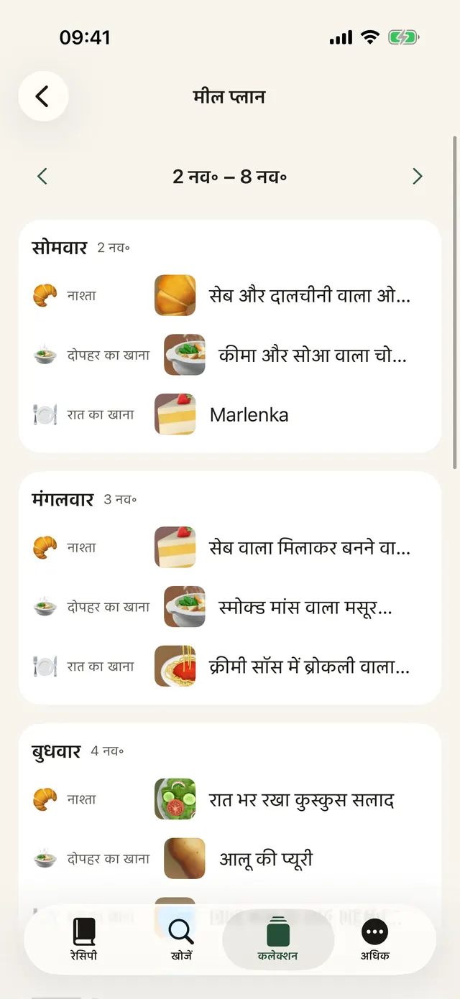
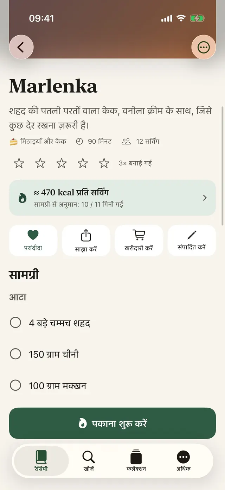
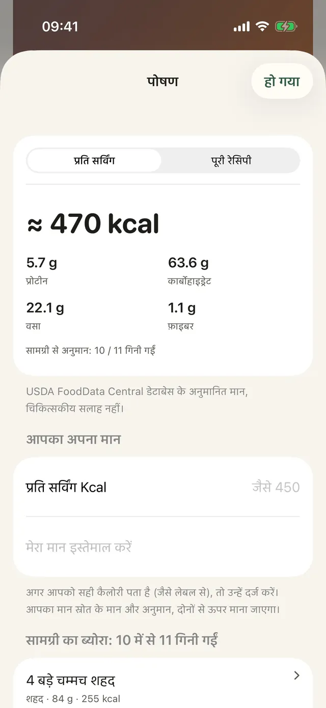
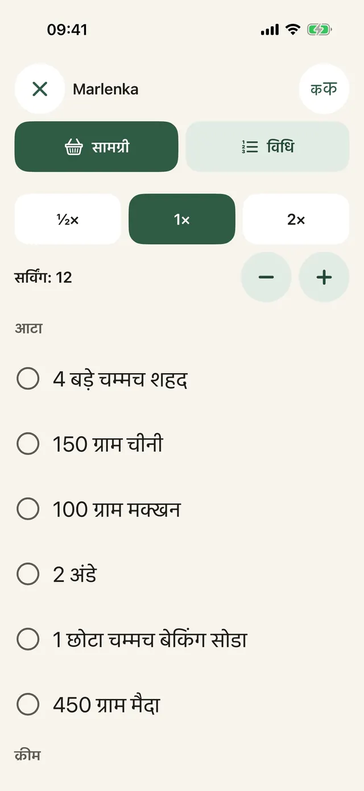
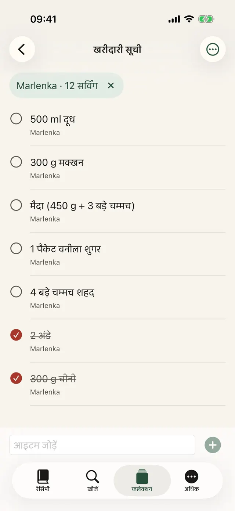
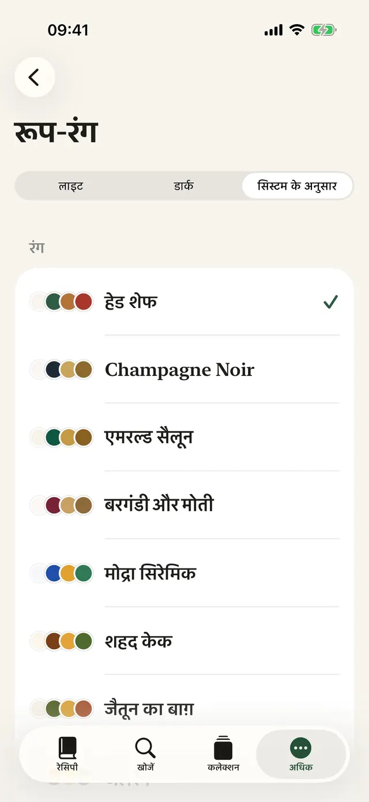
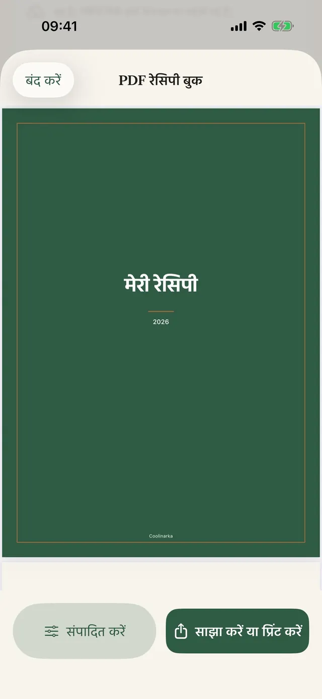
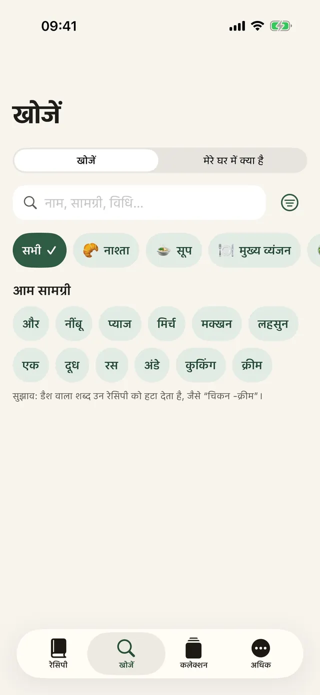
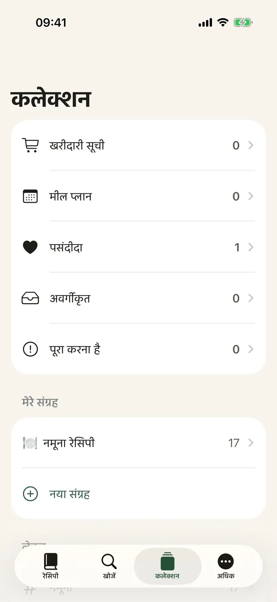

एक टैप में सहेजें
Instagram, Facebook या Safari में “साझा करें” पर टैप करें और Coolinarka चुनें।
Instagram, Facebook, वेब या वीडियो से रेसिपी सहेजें। Coolinarka उसे साफ़-सुथरी सामग्री और चरणों में बदल देता है और पकाते समय एक-एक कदम करके आपको आगे ले चलता है।
iPhone और iPad के लिए, मुफ़्त। Android वर्शन जल्द ही Google Play पर आएगा।


सोशल मीडिया के पोस्ट में रेसिपी कुछ ऐसी दिखती है। एक टैप और सब कुछ करीने से सामने, साथ में सर्विंग भी, जिनके हिसाब से मात्रा बदल सकते हैं।
😍😍 क्रीमी सॉस में ब्रोकली वाला पेने!!! 400 ग्राम पेने, 1 ब्रोकली, 250 मिली कुकिंग क्रीम, 2 कली लहसुन, 50 ग्राम परमेसन, नमक और मिर्च ... पेने को पैकेट के अनुसार उबालें, आखिरी 4 मिनट में ब्रोकली के फूल डाल दें। तेल में लहसुन को थोड़ा भूनें, क्रीम डालकर गरम करें। छने हुए पास्ता और ब्रोकली को सॉस में मिलाएँ और ऊपर से परमेसन बुरकें। 🔥🔥 #करम #food
सीधा-सादा पास्ता, जो बच्चों को भी पसंद आता है।
यह ऐप की नमूना रेसिपी है। असली पोस्ट अक्सर इससे भी ज़्यादा उलझे होते हैं, और Coolinarka उन्हें स्क्रीनशॉट या वीडियो से भी सँभाल लेता है।
बड़े अक्षर, स्क्रीन पर एक बार में एक ही चरण, और डिस्प्ले बंद नहीं होता। टाइमर एक टैप से शुरू करें, चाहे हाथों में आटा ही क्यों न लगा हो।
इस डेमो में टाइमर तेज़ चलता है।
पेने को पैकेट के अनुसार उबालें, आखिरी 4 मिनट में ब्रोकली के फूल डाल दें।
कई रेसिपी की सामग्री जुड़कर एक साथ आ जाती है। देश बदलें और देखें कि खोज का शब्द स्टोर की भाषा में कैसे बदल जाता है, चाहे रेसिपी किसी और भाषा में हो।
कार्ट में आइटम आप स्टोर में ही जोड़ते हैं। ऐप की स्टोर के आपके खाते तक पहुँच नहीं होती। उपलब्धता आपके पते पर निर्भर करती है।
अमेरिकी स्टोर में capsicum ढूँढ़ते भारतीय, विदेशी कैफ़े में chai tea मँगाते भारतीय। विदेश की दुकान में एक छोटी-सी चूक काफ़ी है और टोकरी में कुछ और ही आ जाता है। Coolinarka स्टोर की भाषा में खोजता है, ताकि आपके साथ ऐसा न हो। क्या आप जानते हैं कि आप क्या लेकर लौटते?
अपने-अपने आइकन वाली नौ थीम, डार्क मोड और बड़ा टेक्स्ट। कोई एक चुनें और यह पूरा पेज बदल जाएगा, ठीक ऐप की तरह।
असली स्क्रीन, उसी भाषा में जिसमें आप यह पेज पढ़ रहे हैं।









Instagram, Facebook या Safari में “साझा करें” पर टैप करें और Coolinarka चुनें।
वीडियो या स्क्रीन रिकॉर्डिंग से रेसिपी बन जाती है, बोली गई बातें सीधे फ़ोन पर ही टेक्स्ट में बदलती हैं।
पूरे हफ़्ते की योजना बनाएँ, ख़ाली जगहें पसंदीदा से भरें और सब कुछ खरीदारी सूची में भेज दें।
भोजन के प्रकार, लेबल, पसंदीदा और आपके अपने कलेक्शन।
नाम, सामग्री या विधि से, डायक्रिटिक चिह्नों की चिंता किए बिना।
होम और लॉक स्क्रीन पर “आज क्या पकाएँ” विजेट, और Siri: “Coolinarka में मुझे क्या पकाना चाहिए”।
पाने वाला उसे फ़ोटो समेत Coolinarka में खोलता है, आपकी रेटिंग और नोट्स उसमें नहीं होते।
क्रॉप, घुमाना और फ़िल्टर।
एक ही Apple खाते वाले डिवाइसों के बीच रेसिपी iCloud से सिंक होती हैं।
अपने कलेक्शन का बैकअप लें या उसे किसी दूसरे ऐप में ले जाएँ।
नमूना रेसिपी और कैलोरी के अनुमान समेत।
ऐप में न खाता है, न विज्ञापन, न ट्रैकिंग। रेसिपी आपके डिवाइस और आपके निजी iCloud में रहती हैं, डेवलपर की उन तक पहुँच नहीं होती।
रेसिपी, इंपोर्ट, एक्सपोर्ट, बैकअप, iCloud और कुकिंग मोड का कोई शुल्क नहीं। Plus एक बार की ख़रीद है, बिना सब्सक्रिप्शन के, और इसे परिवार के साथ साझा किया जा सकता है।
मान अनुमानित हैं और चिकित्सा सलाह नहीं हैं। गणना डिवाइस पर ही होती है।
Coolinarka डाउनलोड करें और अपनी पहली रेसिपी आज ही सहेजें।
iPhone और iPad के लिए, मुफ़्त। Android वर्शन जल्द ही Google Play पर आएगा।